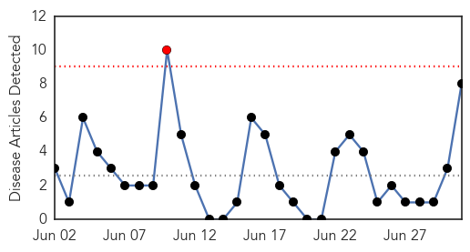
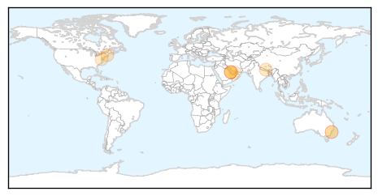
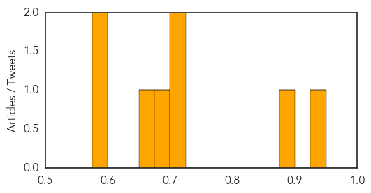
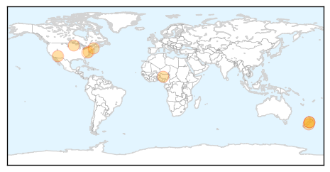

Hepatitis
30-Day Web Trend
1 alerts, 0 warnings

30-Day Twitter Trend
0 alerts, 0 warnings

Article Locations
Article Confidences
Top Articles:
- 0.929
- 1.1pc of population affected by hepatitis C
- 0.877
- Prevalence of hepatitis C virus high in Mena region
- 0.721
- HCV Vastly Underreported in the United States
- 0.707
- In Nepal, risk communication supplements pre-existing health interventions - Nepal
- 0.699
- Thousands of dental patients in Sydney urged to undergo hepatitis, HIV testing over clinic hygiene breaches
- 0.656
- Ayotte joins Greater Nashua leaders to discuss challenges of opioid addiction
- 0.591
- Sydney dental patients at risk of HIV, hepatitis exposure
- 0.577
- Expat asked to leave UAE due to old TB scars
Top Tweets:
-
No tweets found for Jul 01, 2015
Influenza
30-Day Web Trend
0 alerts, 0 warnings

30-Day Twitter Trend
0 alerts, 0 warnings

Article Locations
Article Confidences

Top Articles:
- 0.987
- Get vaccinated before the flu gets you
- 0.985
- Get vaccinated before the flu gets you
- 0.982
- Get vaccinated before the flu gets you
- 0.981
- Controlling Avian Flu in West Africa: Nuclear-Derived Techniques Enable Early Detection of Outbreaks
- 0.970
- Health Advisories From CDC Calm Avian Flu Worries
- 0.954
- The 1872 Equine Influenza Epidemic That Sickened Most U.S. Horses
- 0.751
- June 30, 2015 Archives
- 0.751
- June 30, 2015 Archives
- 0.625
- trivalleycentral.com: Area News
- 0.502
- ACIP Issues New Recommendation for MenB Vaccination
Top Tweets:
-
No tweets found for Jul 01, 2015